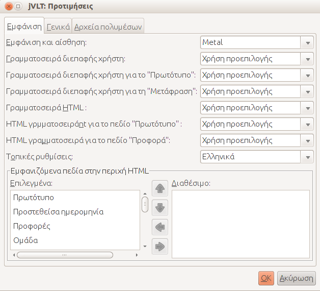
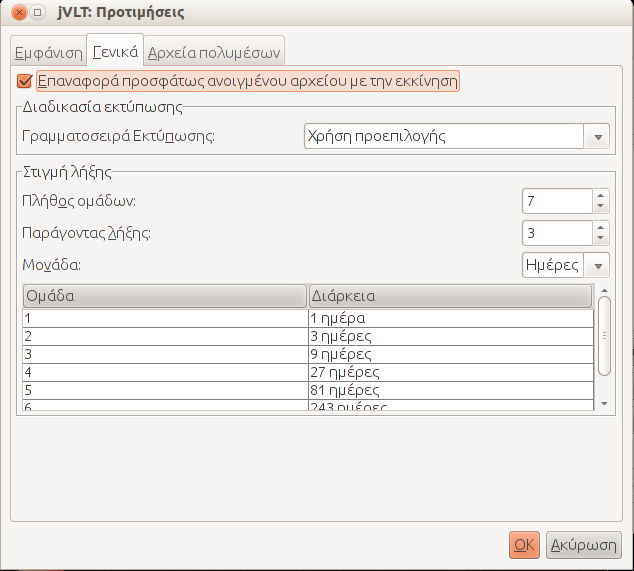
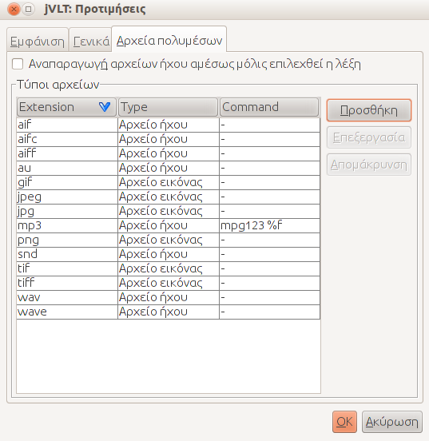

jVLT - Ένα εργαλείο εκμάθησης λεξιλογίου
Ρυθμίσεις
Ρυθμίσεις εμφάνισης
Στην καρτέλα "Εμφάνιση" μπορούν να γίνουν οι ακόλουθες ρυθμίσεις:- Εμφάνιση και αίσθηση(look and feel): Καθορίζει την εμφάνιση της εφαρμογής. Το πλήθος των επιλογών εξαρτάται από το λειτουργικό σύστημα.
- Γραμματοσειρά περιβάλλοντος εργασίας χρήστη: Η γραμματοσειρά περιβάλλοντος εργασίας χρήστη χρησιμοποιείται για όλα τα στοιχεία εκτός από την λεπτομερή εμφάνιση των λέξεων και παραδειγμάτων και τα στοιχεία για τα οποία η γραμματοσειρά ορίστηκε μέσω των ακόλουθων ρυθμίσεων. Είναι εφικτό να αλλάξει αυτή η γραμματοσειρά μόνο εάν χρησιμοποιείται η εμφάνιση και αίσθηση "Metal".
- Πρωτότυπη γραμματοσειρά πεδίου εισόδου, Πρωτότυπη στήλη πίνακα
- Γραμματοσειρά πεδίου προφοράς, Προφορά στήλης πίνακα
- Γραμματοσειρά HTML: Αυτή η γραμματοσειρά χρησιμοποιείται για τις HTML περιοχές στις καρτέλες Λεξιλόγιο, Παραδείγματα και Κουίζ.
- Γραμματοσειρά πεδίου "Πρωτότυπο" Αυτή η ρύθμιση καθορίζει τη γραμματοσειρά του πεδίου "Πρωτότυπο" στη λεπτομερή εμφάνιση.
- Γραμματοσειρά του πεδίου "Προφορά": Μπορείς να επιλέξεις την γραμματοσειρά που εμφανίζει την προφορά στην λεπτομερή εμφάνιση.
- Τοπικές Ρυθμίσεις: Αυτή η ρύθμιση καθορίζει την γλώσσα των συμβολοσειρών της εφαρμογής.
- Εμφανιζόμενα πεδία στην περιοχή HTML Εδώ μπορείς να επιλέξεις ποιά πεδία εμφανίζονται στην λεπτομερή εμφάνιση της καρτέλας λεξιλόγιο.

Γενικές Ρυθμίσεις
Στην καρτέλα "Γενικά" μπορείς να κάνεις τις εξής ρυθμίσεις:- Επαναφορά πρόσφατου αρχείου κατά την εκκίνηση: Εάν επιλέξεις αυτό το checkbox το jVLT θυμάται πάνω σε ποιό αρχείο δούλεψες την τελευταία φορά και το φορτώνει κατά την επόμενη εκκίνηση.
- Γραμματοσειρά Εκκίνησης: Πατώντας το κουμπί που εμφανίζεται στην περιοχή "Εκτύπωση" μπορείς να αλλάξεις τη γραμματοσειρά που χρησιμοποιείται για την εκτύπωση.

Ημερομηνία Λήξης
Η ημερομηνία λήξης καθορίζει το πότε μια λέξη γίνεται ενεργή ξανά μετά από ένα κουίζ (δες την ενότητα κουίζ). Υπάρχουν 3 διαφορετικές ρυθμίσεις για να αλλάξεις την ημερομηνία λήξης:- Αριθμός Ομάδων: Ο μέγιστος αριθμός ομάδας που μπορεί να ανατεθεί σε μια λέξη. Αν μια λέξη με τον μέγιστο αριθμό ομάδας αναγνωριστεί κατά τη διάρκεια ενός κουίζ τότε ο αριθμός ομάδας της δεν αλλάζει(συνήθως αυξάνει κατά ένα).
- Παράγοντας λήξης: Καθορίζει το χρονικό διάστημα μετά το οποίο μία λέξη ξαναγίνεται ενεργή. Εάν X είναι ο παράγοντας λήξης, μια λέξη που ανήκει στην ομάδα νούμερο i γίνεται ξανά ενεργή μετά από Xi-1 μονάδες χρόνο. Π.χ. μία λέξη της ομάδας 1 ενεργοποιείται ξανά μετά από μια μονάδα χρόνου, μια λέξη που ανήκει στην ομάδα 2 μετά από X μονάδες χρόνου, μια λέξη στην ομάδα 3 μετά από X2 μονάδες χρόνου και ούτω καθεξής.
- Μονάδα χρόνου: Η μονάδα χρόνου μπορεί να είναι μέρες ή ώρες.
Ρυθμίσεις πολυμέσων
Σε αυτή την καρτέλα μπορείς να επιλέξεις τον τρόπο διαχείρισης των αρχείων πολυμέσων που καθορίζονται στο παράθυρο διαλόγου από το jVLT.
- Αναπαραγωγή αρχείων ήχου αμέσως μετά την επιλογή της λέξης: Επιλέγοντας το checkbox, το jVLT αναπαράγει αυτομάτως τα αρχεία ήχου καθώς επιλέγεις μία λέξη από τη λίστα λέξεων.
Τύποι αρχείων:
Στην περιοχή "Τύποι αρχείων" μπορούν να καθοριστούν εξωτερικές εντολές για το άνοιγμα πολυμεσικών αρχείων. Επιλέγοντας "Επεξεργασία" ή "Προσθήκη" ανοίγει ένα παράθυρο διαλόγου που σου επιτρέπει να επεξεργαστείς διάφορους τύπους αρχείων. Οι διάφορες λειτουργίες που παρέχονται είναι οι εξής:- Επέκταση αρχείου: Η επέκταση αρχείου, π.χ. "mp3". Για τους προεπιλεγμένους τύπους αρχείων αυτή η τιμή δεν μπορεί να αλλάξει.
- Τύπος: Ο τύπος αρχείου. Αυτή η επιλογή είναι προαιρετική, και καθορίζει μόνο το ποιό εικονίδιο χρησιμοποιείται στην λεπτομερή εμφάνιση λέξης .
- Χρησιμοποίησε το jVLT για άνοιγμα: Μπορείς να επιλέξεις το checkbox μόνο για τους προεπιλεγμένους τύπους αρχείων. Εάν είναι επιλεγμένο το jVLT θα αναπαράγει το αρχείο αντί για να εκτελέσει κάποια εξωτερική εντολή. external command.
- Εντολή: Η εντολή που χρησιμοποιείται για το άνοιγμα/αναπαραγωγή του αρχείου με την συγκεκριμένη επέκταση. Πρέπει να προσθέσεις το %f ως χαρακτήρα κράτησης θέσης για το όνομα του αρχείου.